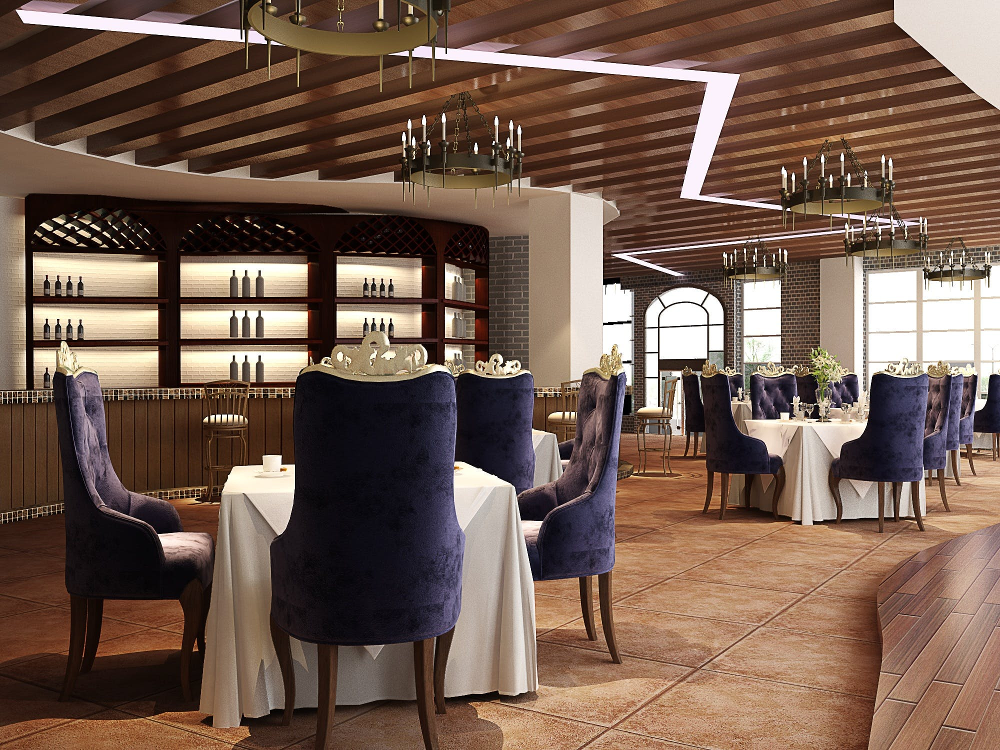

Restaurant Eating Services To All Under Righteousness And Nourishment. A restaurant is a place where you can eat a meal and pay for it. In restaurants, your food is usually served to you at your table by a waiter or waitress. The restaurant serves breakfast, lunch, and dinner. The food at the restaurant was good and the waiters were polite.
